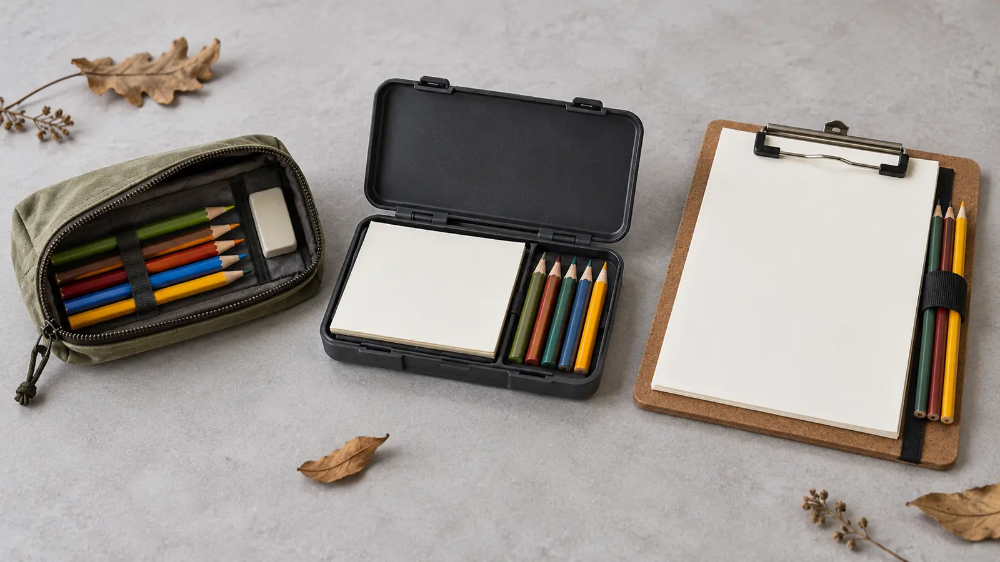

Zipper pouch
Fits: museums, libraries and short walks with benches. Wins: light, flexible, inexpensive. Loses: no drawing surface; points can break.
GEAR · ART OUTSIDE · HONEST BUYING FRAMEWORK
The best field kit is not a miniature art store. It is one surface, eight familiar tools and a carry system a child can open, close and count without spilling the day.

Build the working kit before choosing its container: one small sketchbook or stack of paper, two graphite pencils, five colored pencils, one eraser and one small cloth for dirty hands. That is ten pieces. Pre-sharpen at home. Use materials the child already handles well. The cap makes loss visible and keeps the adult from hauling a studio that nobody uses.
Run the first trip in a reused zip bag or school pencil pouch. If the child can carry it, make one drawing and return all ten pieces, the system works. Buy a specialized case only when the route exposes a real failure: crushed points, wet paper, no stable drawing surface or supplies repeatedly escaping.
Museum: confirm pencils and sketching are allowed; many collections restrict pens, wet media, easels or large bags. Trail: use dry media, stay on the route and never collect natural material for the drawing. Car or restaurant: choose a contained format that cannot roll into the driver area or aisle. At home: use the ordinary school supplies; portability adds nothing.
Colored pencils give control without liquid, but they still need labeling, intact barrels and age fit. Graphite is the lowest-friction default. Markers, paint, glue, solvent, fixative spray, blades and craft knives solve a different problem and do not belong in this compact family field kit.
The U.S. Consumer Product Safety Commission says art materials are subject to the Labeling of Hazardous Art Materials Act and should carry required conformance and hazard information as applicable. Read the actual package. “Non-toxic” is not permission to taste, chew, use on skin, ignore age guidance or bypass handwashing.
Keep the original packaging long enough to retain manufacturer, model or batch information. Search the CPSC recall database for exact products when warranted. Replace cracked cases, exposed points, damaged closures and loose hardware rather than improvising a child-use repair.
Do not grade the drawing. Ask what changed after five minutes of looking. Pair the kit with the nature observation tool guide, the kids’ camera decision or the Everson look-sketch-leave plan.
The no-buy version costs nothing beyond supplies already owned. A pouch version should be judged against one repaired school pencil case. A hard case earns more cost only when repeated breakage or organization justifies it. A clipboard earns its bulk only when standing sketch time happens often.
Carry the kit inside the dry compartment of the family daypack. After the trip, wipe dry items as their instructions permit, discard damaged paper appropriately, restock to ten and store out of reach if small parts or sharpeners require it.
Low energy: one pencil, one page, one minute. Rain: draw from a permitted indoor space or the parked car; do not shelter under an isolated tree during lightning. Cold hands: describe three shapes aloud instead of forcing grip. Lost pencil: end with fewer tools; do not leave the trail to search. Nothing inspires anyone: close the kit. Observation is optional.
Skip when the destination prohibits art materials, when carrying or fine-motor demands turn the kit into work, or when the child would rather photograph, dictate or simply look. Use a tactile, larger-grip or communication-adapted tool when that better matches the child. The goal is noticing, not proving that every family sketches.
MAKE THE WEEK COUNT
Build the plan your family can finish well, then leave enough energy for the next part of the day.
More family plansTHE USEFUL STUFF
These are practical categories to compare—not a reason to overpack. Check fit, specifications and current reviews before buying.
Paid links: As an Amazon Associate I earn from qualifying purchases. You pay no additional cost.
Compare loaded size, zipper control, interior visibility, cleanability and whether the child can count every tool back in.
See current options → COMPARE ON AMAZONChoose protection only after checking loaded weight, hinge and latch durability, tool retention and fit in the real daypack.
See current options → COMPARE ON AMAZONUse a clipboard when the writing surface earns its bulk; compare clip control, paper protection, edge finish and tool storage.
See current options →